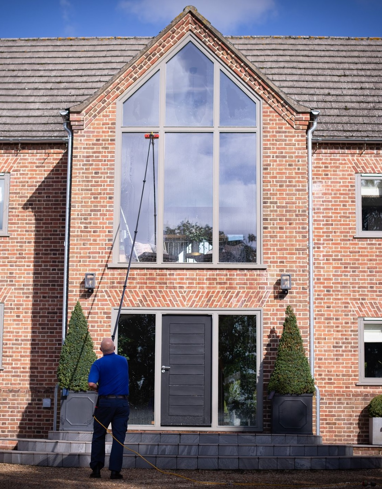
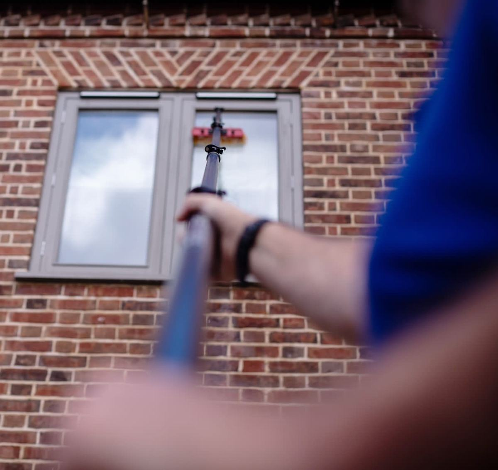
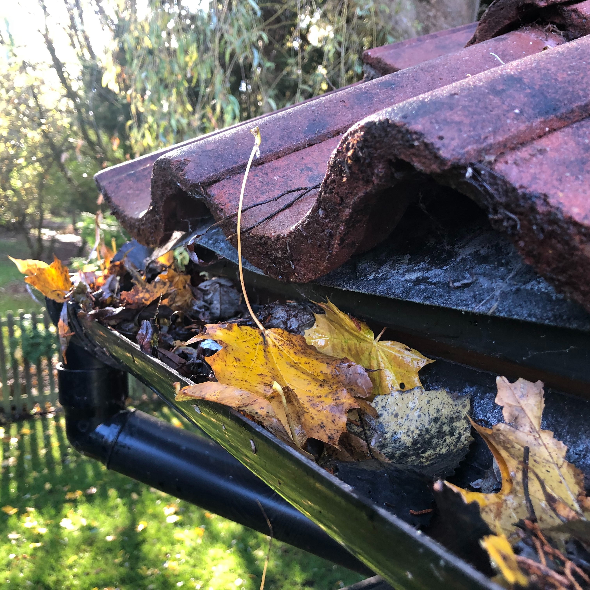
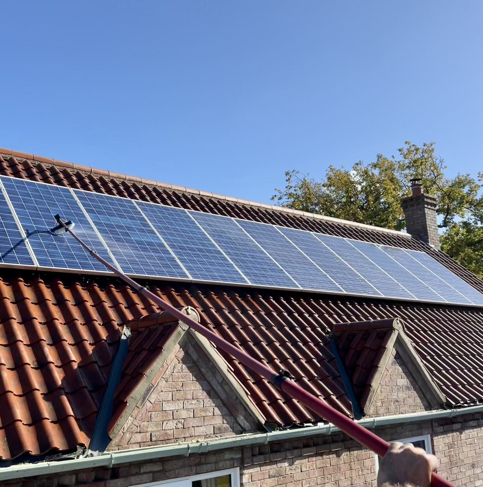

Window, gutter & solar panel cleaning in Watton & Thetford
Andrew and KAT Window Cleaning look after homes and businesses across Watton, Thetford, Swaffham, Attleborough, Hingham, Great Hockham and the surrounding villages.

- 5.0 on Google from 50+ reviews
- Fully insured with public liability cover
- 10+ years in the trade
- Free re-clean if you are not happy within 24 hours
What we clean
-

Window cleaning
Regular rounds every 4, 8 or 12 weeks. Glass, frames and sills every visit.
Free quote
-

Commercial window cleaning
Superstores, warehouses, offices, new builds, shops and landlords, including buildings of 3 storeys and above.
Free quote
-

Gutter clearance
Every gutter inspected and cleaned out by hand, with photos on request.
From £50
-

Solar panel cleaning
Dirt, lichen and bird mess removed safely from the ground.
Free quote
Autumn gutter clears are booking now
Once the leaves are down, a clear stops water spilling over all winter. Gutters emptied from £50, cleaned by hand, photos on request.
Commercial window cleaning you can put on a schedule
- Superstores, warehouses and offices
- New builds, shops and rental portfolios
- Buildings of 3 storeys and above
- Full public liability insurance
- Regular contracts and electronic invoicing
Rated 5.0 by 50+ customers on Google
Read the reviews on GoogleKAT Window Cleaning recently carried out some work for us on a large bespoke house project for Clayland Estates. Andrew was a true professional, and worked cleanly and efficiently. I would happily recommend KAT Window Cleaning to anyone.
Always cleans the sills and frames. Friendly and reliable service. 100% recommended.
Andrew is reliable, trustworthy and has a real attention to detail. I would recommend anyone to use KAT Window Cleaning!
KAT Window Cleaning do a great job of keeping my solar panels clean from lichen and the birds. It gives me peace of mind knowing he has all the equipment to do it safely from the ground.

Meet Andrew
Hi, I'm Andrew, the owner of KAT Window Cleaning. I'm based in Watton and look after homes and businesses across Watton, Thetford, Swaffham, Attleborough, Hingham, Great Hockham and the surrounding villages.
With over a decade in the trade, I take pride in being trustworthy, safe and thorough. Every clean comes with a satisfaction guarantee: if you're not happy, tell me within 24 hours and I'll come back and re-clean for free.
Ask Andrew a questionWhere we work
- Watton
- Thetford
- Swaffham
- Attleborough
- Hingham
- Great Hockham
Based in Watton, covering the surrounding villages too. Not sure if you're in the area? Give Andrew a call.
Get a free quote
Tell us a little about the property and Andrew will reply with a price. Most quotes can be done from photos.